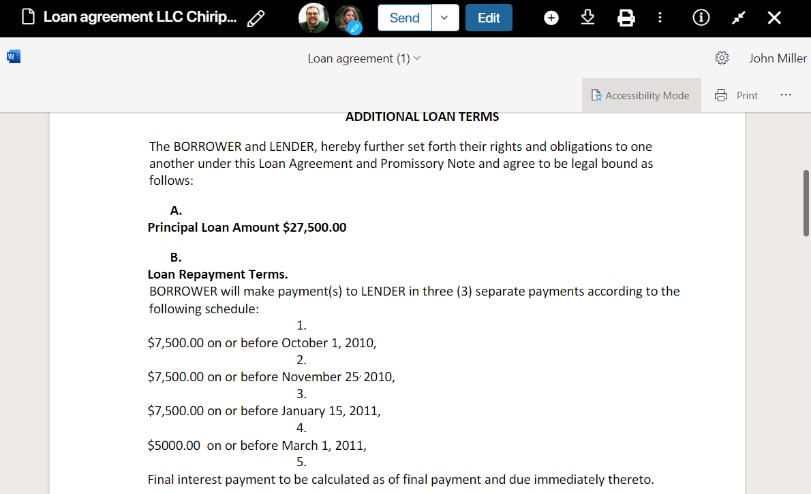
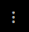
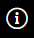
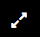

You can preview a file added to the system. To do this, just click on its name in the list. Its preview page will open where you can find all information about the file and its contents.

The preview mode is supported for the following formats: .doc, .docx, .xls, .xlsx, .ppt, .pptx, .pdf, .png, .jpg, .bpm, .tif, .tiff, .avif, .gif, .webp.
Use the buttons on the upper panel to:
Send the file for information or approval. |
|
|
Edit the file and create a new version of it. Read more about it in the Edit files in BRIX article. |
|
Upload a new version of the file. |
|
Save the file to your PC. |
 |
View the list of actions that can be performed with the file. Read more in Actions with files. |
 |
Open the side panel with general information about the file. |
 |
Enter the full-screen mode. |
A .pdf document page can be rotated using the panel at the bottom of the preview area.
On the side panel, you can:
- View information about the user who uploaded the file, its size and location
- Assign tasks, add checklists, or leave a comment in the associated activity stream
- Open a list of file versions
- Compare .doc and .docx files with each other
All the uses that are simultaneously working with the file are shown on the top panel. If the editing option is set up, the pencil icon will be displayed next to the user picture of the editor.